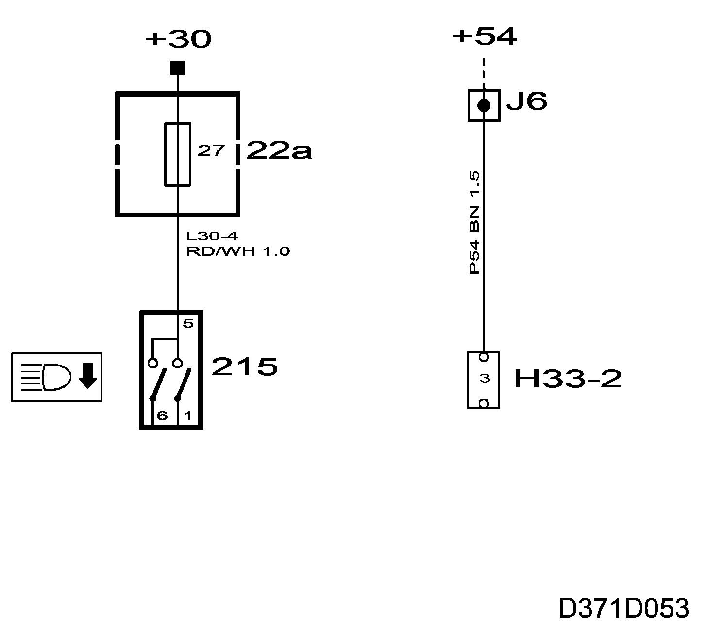
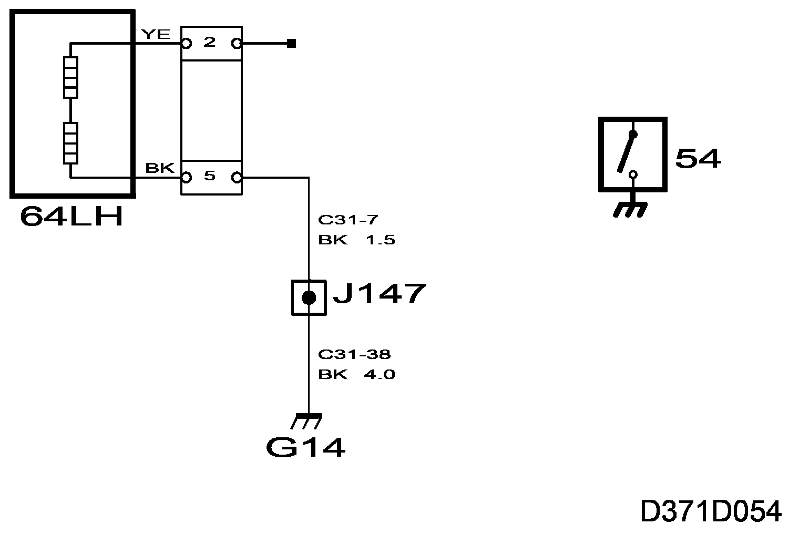
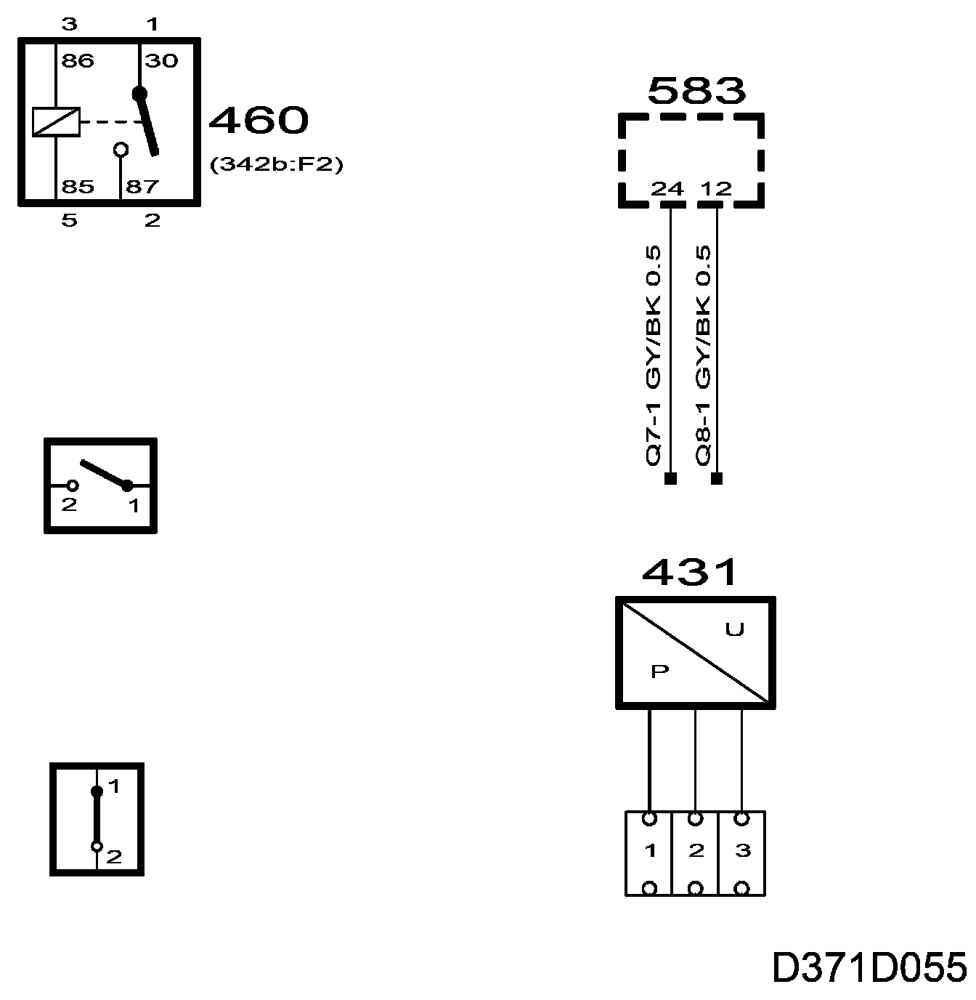
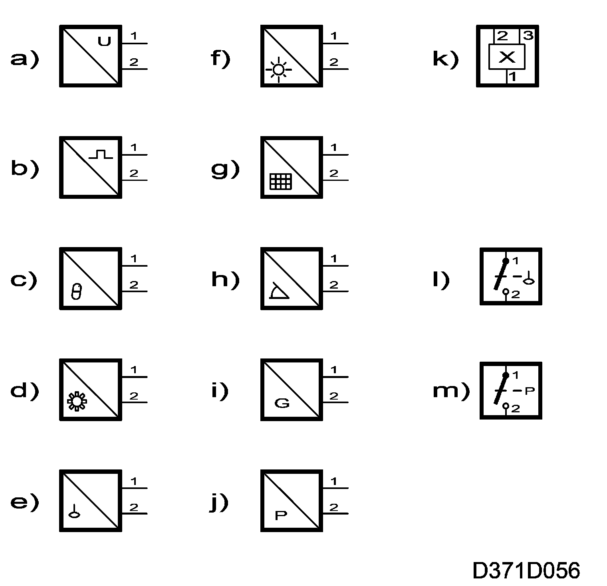
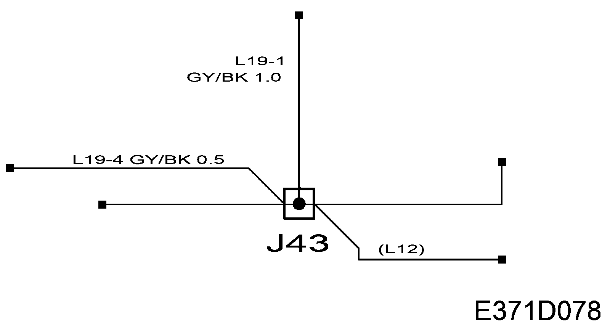

Symbols Used In the Wiring Diagrams
Symbols Used In The Wiring Diagrams
Date marking of diagrams
All diagrams are marked at the bottom. For example,
F5E08
050512
where the top row is the file name and the bottom one is the date on which the diagram was compiled. The date is given in the form YYMMDD. Always use the latest wiring diagram.
General
The wiring diagrams are compiled with the following conditions:
- Switches and relays are represented in their inactivated and unenergized state unless otherwise indicated.
- No key in the ignition switch
- Central locking system unlocked
- Coolant, brake and washer fluid topped up
- Gear lever/selector lever in neutral position
- Handbrake released
Fuses

Generally the wiring diagram of the respective system shows each function from the fuse in question in the main fuse box out to the respective component(s) and on to the grounding point.
Only the components connected in the system are shown.
To simplify fault diagnosis, a broken line is used in certain instances to signify the power supply.
The power supply to the respective fuse is shown separately in the power supply diagram.
Example:
Power to a fuse comes from +30. The feed up to the fuse in question can be seen in the fuse box diagram for +30 feed:
- Power supply +30, main fuse box in the engine bay
- Power supply +30, fuse box in the dashboard
- Power supply +30 main fuse box in the luggage compartment
Grounding points

Most of the car's grounding points are fitted with component numbers that consist of number, for example, G14.
Only the system's connected components are shown in a system diagram.
Sometimes the grounding points are divided into signal grounding and power grounding. They then have the additional letter S respective P. Components with a low power consumption and cable screens are ground on signal grounding points.
In the sections "Electrical System - Wiring harness and components - Grounding point - Technical description" and "Electrical System - Wiring harness and components - Grounding point - Component location" show the location of the grounding points and the components connected to respective grounding points.
Certain components are grounded directly to the body, e.g. the door switches. These ground connections are indicated by a thicker line than normal connections to the grounding point.
Switches, relays and components

The location of the relays is stated in brackets below the component number.
Note: in numbers are the numbers imprinted on the top of the relay box, not the pin numbers on the relay.
When the box around the component is drawn with a solid line, the whole component is shown.
When the box around the component is drawn with a broken line, only part of the component is shown.
On some components having cable tails, the connector has not been given a separate H number to show that it is part of the component.
For components with more than one connector, the position of the connectors are usually indicated with a K plus a number, e.g. K22. This means that the connector has 22 pins.
The components are designated by a serial number and one or more supplementary letters, which indicate their location or type. The location is indicated by capital letters, e.g. 298FL, while the type is indicated by lower case letters, e.g. 47a. The following abbreviations are used to indicate position:
C = Centre
D = Driver side
F = Front
H = Hatch (boot lid/tailgate)
P = Passenger side
R = Rear
LH = Left Hand
RH = Right Hand
In the section "Electrical System - Wiring harness -Component location" there are illustrations of components' connector housings.
Connectors
The connectors located between the various wiring harnesses start with H, e.g. H16-1, where the number after the H indicates the number of poles the connector has. The number after the hyphen is a serial number within that pole quantity group. In the example H16-1, the connector has 16 poles and it is the first in the group.
There are illustrations of all connector housings in the section "Electrical System -Wiring harness and components - Connector - Component location"
Sensors and monitors

The symbols for sensors and monitors have been simplified. The connector/output side of the sensors have an internal symbol showing the type of output signal and the other half is a symbol showing the measured quantity.
All internal symbols for the measured quantity may be used with other components.
a. Sensor output with continuous voltage
b. Sensor output with pulsed voltage, e.g. frequency or PWM
The outputs are combined with the following quantity symbols to indicate the correct type of sensor:
c. Temperature
d. Speed/rate via cog or the like
e. Level
f. Solar
g. Load
h. Angle
i. Acceleration
j. Pressure
One type of sensor that can be used for different purposes is
k. Hall sensor
A monitor is shown as a switch with measured quantity:
l. Level switch
m. Pressure switch
Crimped connections

To reduce the number of connectors used in the car, several crimp connections are incorporated in the wiring.
Only the system's connected components are shown in a system diagram.
A list of all crimps is found in the section Crimp connections
In the section "Electrical system - Wiring harness and components - Crimp connections - Component location" there is a diagram for each crimp connection where all connected components are illustrated.